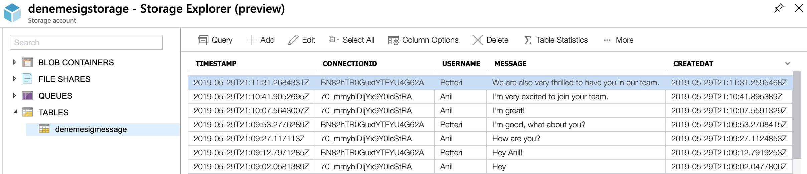

Articles
These articles explain which methods are used and why they were used in the process.
IoC Framework: AutoFac
I have chosen AutoFac to implement IoC in this project because It is absolutely compatible with .Net Core hence It doesn't give any place to problems. It is easily implemented from Nuget packages and one of the most popular IoC frameworks for .Net Core, so it was easier to debug and troubleshoot.
First of all, I have implemented .Net Core built-in IoC container to my project and made it work. After that I looked for more and wanted to try 3rd party tools for the purpose. I have researched, read and inspected a lot of documentations, reviews and benchmarks of bunch of IoC frameworks(Castle, Unity, Ninject etc.). The syntax and the features of Autofac was appealing to me most. Good configurability and features, okay performance and finally, It has a great community and documentation where I was able to find what I was looking for.
Documentation Tool: DocFX
For the documentation, I prefered DocFx because it has a great structure for documenting the code. It gives an interface to the user which are some .md files and .yml files. Then it takes input from these files and renders it into a nicely designed .html file. By using XML Comments, it was very easy to document the code with DocFX since it grabbed all the information in these comments and put them into the output html files accordingly. Also it is a very widely used tool, so documentation of the tool and understanding its functions was easy and quick.
Azure Storage Account : CloudTable
This project uses Azure Storage Account for data persistance. All sent messages are stored in denemesigmessage table in cloud. Messages have 4 fields which are ConnectionId, Username, Message and CreatedAt date. Below you can see messages table and its content.
